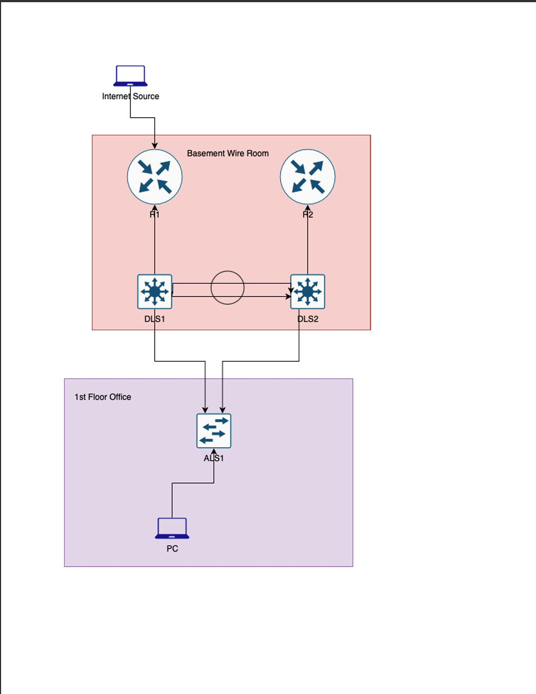
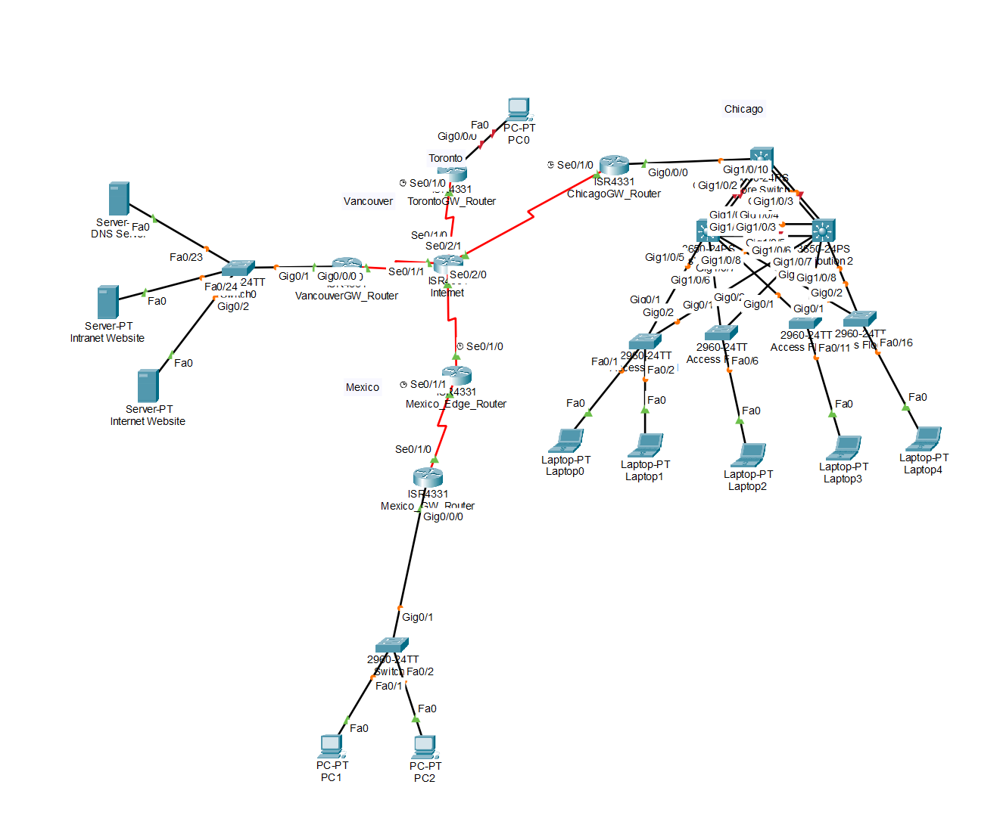
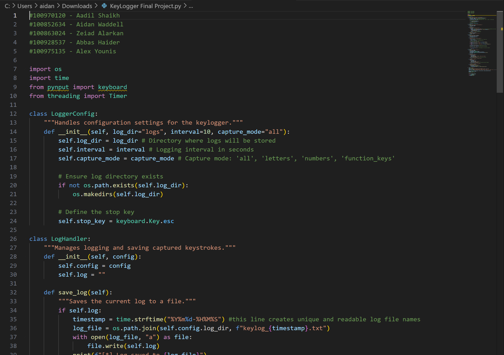
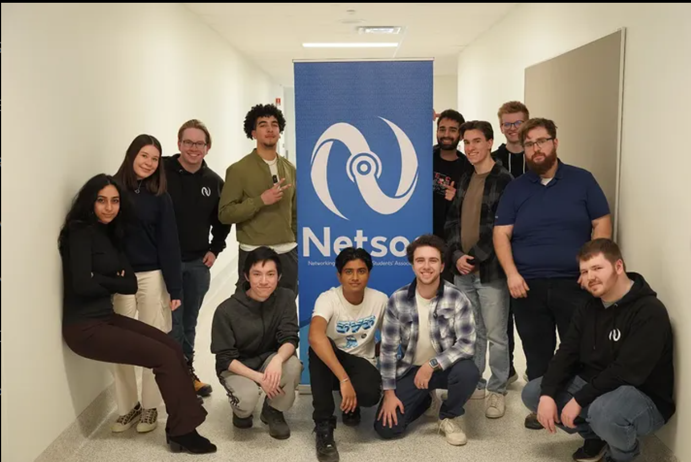

Here at Ontario Tech University, I've had the wonderful opportunity to create a variety of projects both for my classes and outside of the school. A few of the examples I have below are the creation of some personal projects of mine, both from school and from extracurricular activities outside of my general classwork!

This is a topology of the physical networking challenge I helped create at the Fall 2025 Entry-Style CTF

This is a topology of the physical networking challenge I helped create at the Fall 2025 Entry-Style CTF

This is an example of the Keylogger project that I played a part in creating during my Object Oriented Programming Class!

This is a picture of myself and the Netsoc team and how I helped in the development of TacOps!